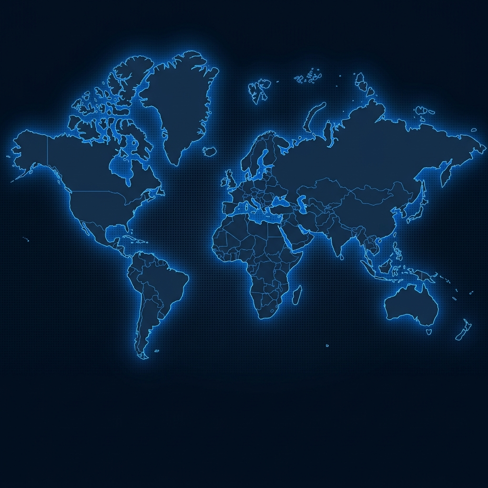
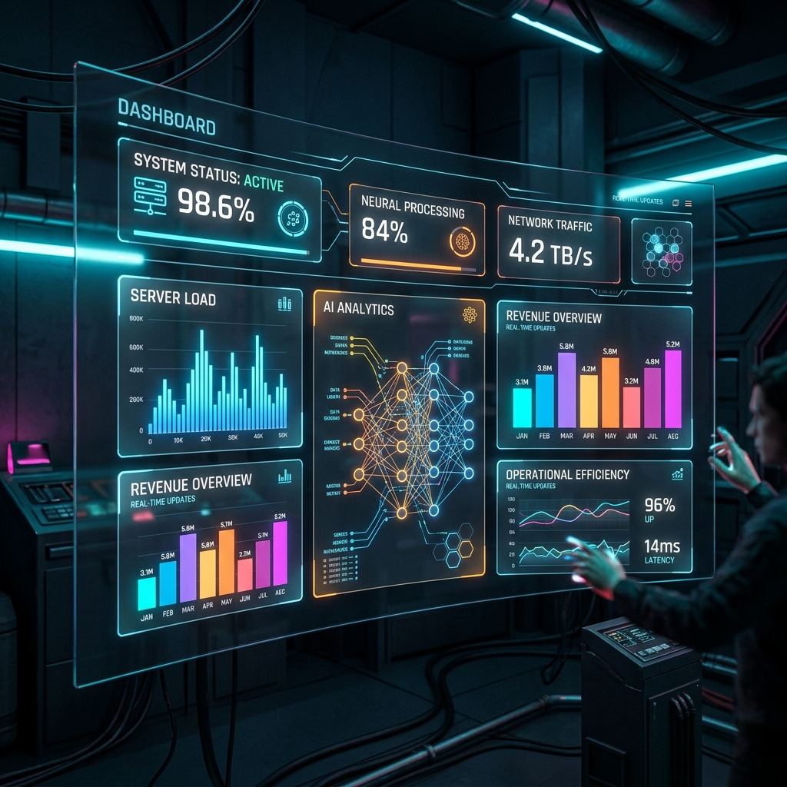

June 04, 2026 • 8 min read
Deploying LLM Agents with Complete Mathematical Safety
Explore how to set strict constraint equations inside multi-agent pipelines to block incorrect state outcomes and ensure compliance.
Read ArticleDeploy custom-tuned language agents, build scalable micro-services, and drive global digital transformation with our premium enterprise AI architecture.
Interact with our simulated custom models. Ask questions, analyze scenarios, and receive tailored technical architecture insights instantly.
Watashi's real-time intelligence nodes analyze complex structural friction in legacy business tools to automate development workflows and cloud infrastructure scaling.
Answer a few questions about your digital friction points, and our stack selector will construct a custom SaaS infrastructure framework for you.
Based on your selection, we recommend combining the following architectural tools to resolve your bottlenecks.
Deploy secure, scalable micro-solutions and state-of-the-art developer pipelines. Experience the power of AI-native SaaS.
Low-latency agent orchestrator. Synthesize operational parameters and delegate multi-step computational jobs with mathematical safety locks.
Explore BlueprintsAutonomous workflow manager. Link databases, cloud webhooks, and communication APIs with deep AI-assisted error correction loops.
Explore BlueprintsAdvanced multi-modal computer vision network. Monitor real-world workflows, process telemetry, and capture video event triggers on the edge.
Explore BlueprintsClick on the structural pipeline blocks below to analyze the active data flows, performance latency nodes, and API routes in real-time.
Loads databases, application API streams, and device logs. All data passes through active validation checks to ensure telemetry is uniform and correct.
We build with premium modern tools, standard developer frameworks, and next-generation model infrastructures to deliver production-ready code.
Our standard framework guarantees safe, compliant, and highly performant integrations from design to continuous scale operations.
Audit corporate friction pipelines and map security guidelines.
Design micro-services endpoints and map data ingestion paths.
Rollout serverless containers with automated node isolation.
Monitor telemetry, tune adapters, and drive continuous growth.
Watashi powers enterprises across 6 continents. Hover over glowing nodes to explore live metrics from our regional technology hubs.

Deep dives into agentic models, scalable micro-services engineering, and enterprise digital safety practices.
Explore how to set strict constraint equations inside multi-agent pipelines to block incorrect state outcomes and ensure compliance.
Read ArticleA deep dive into migrating large relational databases into cloud-native, serverless structures with minimum business disruption.
Read Article
How Watashi partnered with global shipping clients to automate dispatch coordination using agentic telemetry, cutting costs by 34%.
Read ArticleJoin global organizations currently optimizing their software cycles, database vector layers, and automated workflows using Watashi AI.